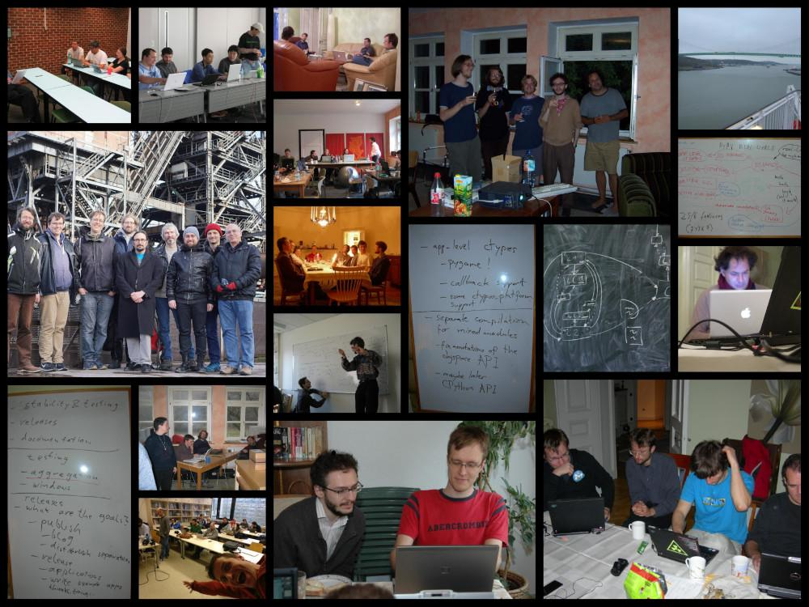

The PyPy Blog Turns 15 Years
Exactly 15 years ago today we wrote the first blog post on the PyPy blog! Over the years, we have written 423 posts, from the shortest to the longest. In 2021 we moved from blogger to our own domain.
The topics over the years varied widely, we published release announcements; roadmaps; JIT, GC and STM updates; benchmarks; sprint, trip and conference reports; technical deep dives; case studies; april fool's jokes; research projects; other languages using RPython; finished PhD Bachelor and Master, theses; pictures:
{kind=link}
and diagrams:

Quite a number of blog posts were very early iterations of papers that we published later, here are a few that I can remember:
Applying a Tracing JIT to an Interpreter became Tracing the meta-level: PyPy's tracing JIT compiler at ICOOOLPS 2009, by far our most successful paper.
Escape Analysis in PyPy's JIT became Allocation removal by partial evaluation in a tracing JIT at PEPM 2010.
Controlling the Tracing of an Interpreter With Hints was a draft of the paper Runtime feedback in a meta-tracing JIT for efficient dynamic languages at ICOOOLPS 2011
Using Escape Analysis Across Loop Boundaries for Specialization was the nucleus of Loop-aware optimizations in PyPy's tracing JIT at DLS 2012.
List Strategies was eventually turned into the paper Storage strategies for collections in dynamically typed languages at OOPSLA 2013.
Greatest Hits¶
In terms of visitors, the top five posts on the old blog were – on the new blog we simply don't have stats (yet?):
The number of posts per year developed like this:

The most prolific authors are:
Several blog posts have made it to the Hacker News front page, three of them to number 1:
Personal Favourites¶
While looking through the posts, there were a few that stood out to me in some way, so here's a subjective list of ones that I had fun looking at again:
2009: PyPy gets a new compiler
2012: Architecture of Cppyy
2013: 10 years of PyPy
2014: PyPy IO Improvements
2016: PyPy Enterprise Edition
We'd like to thank our authors, guest authors, commenters, users and readers who have stuck with us through one and a half decades! If there's any particular topics you would like to read something about, or any guest posts you'd like to write, let us know!
Comments